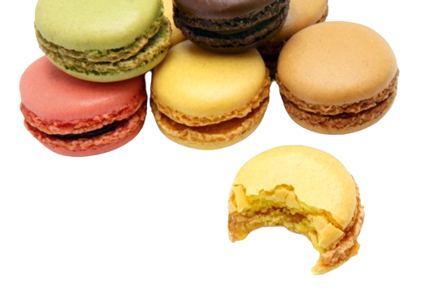

Macaron Magyarországon
Centrál Kávéház/ Váci Desszert Szalon, Mihályi László - Változó eredményekkel találkoztunk. A váci szalonban (nagyobb átmérőjű desszert kompozíció formájában is kóstolható) kicsit csak néha találtunk, akkor éppen kissé szárazba futottunk. Ez feltehetőleg abból is adódik, hogy a vendégek nemigen ismerik, kevesen veszik. A gyerekek állítólag nagyon szeretik, boldogan elnyammognak rajta. A Centrálban ellenben igencsak rácsodálkoztunk, amikor a pultban megláttuk a színesen virító, tökéletes kivitelezésű macaronokat. Méginkább leesett az állunk, amikor beleharaptunk, ugyanis simán megközelítette a nemzetközi mércét, kívül hajszálvékonyan roppant. No, nemhiába a tekintély. Nagy valószínűséggel tökéletes időpontban kaptuk el a készítéshez képest, így az állag szinte tökéletes volt. Kókuszosat, málnásat és pisztáciásat kóstoltunk, íz tekintetében nekünk a töltelék aránya lehetne több, plusz a savanykás/keserű kontrasztra jobban utazunk, így picit túl édes volt. Ár/érték arányban a legjobb a városban. (Ára: 100Ft/db)
Le Meridien cukrászata, Mázás István - Itt elsőként a kiszolgálás szívonalát kell kiemelnünk, bár nincs közvetlen összefüggésben a macaron minőségével, mégis figyelemreméltó. Utcáról sétáltunk be és érdeklődtünk, hogy elvihetünk-e macaront, a legnagyobb udvariassággal és természetességgel fogadtak. Itt is azt tapasztaltuk, hogy naptól függően változott a macaron állaga, egyszer kiváló, máskor közepes volt. Kiemelkedően mutatósak, az egyiket némi aranypor tette még különlegesebbé. Az ízek tekintetében itt volt némi játékosság, kóstoltunk pl. puncsosat is. Sőt, a vaníliás-citromos töltelék az egyik legjobb ízű krémnek bizonyult. A pisztáciás ugyanabban a betegségben szenved, mint mindenütt, kissé túl aromás. A cukrászat egyébként kiváló, elvitelre is készítenek süteményeket, (különösen ajánljuk a mini canelét, ami zseniális) 150Ft/db
Zazzi Cukrászda, Solymár, dr. Erdős Melinda - Aki még nem hallott a solymári Zazzi-ról, javasoljuk, hogy tegyen egy kirándulást, nem fogja megbánni. Az útszéli kis cukrászda már három éve üzemel, de mi is csak most hallottunk róluk a Gusto-nak köszönhetően (portré a mostani számban ), gyorsan meg is tekintettük. A hölgyek (nyugdíjas doktornő és tanárnő) szenvedélyből kezdték el az üzletet, ami hajaj de messze meghaladja a hobbiszintet- a legjobb francia cukrásztanfolyamokon képezték magukat, az eredmény meg is látszik. Az ő macaronjuk úgy néz ki, hogy nekünk egész egyszerűen elállt a lélegzetünk, amikor kihozták. Tökéletesen kivitelezett, precíz munka, ráadásul az első, ahol végre zseniális keserűcsokoládékrém a töltelék, ráadásul megfelelő arányban. Abszolút dobogós élmezőny, le vagyunk nyűgözve. (Ára: 180Ft/db)
Auguszt Cukrászda, Auguszt család - Augusztéknak azért drukkolunk különösen, mert az egyik legnépszerűbb és legforgalmasabb cukrászda. Nem rendszeresen, de néha-néha felbukkan náluk macaron (makron néven fut), amikor találtunk, rögtön le is csaptunk rá. Epres, pisztáciás és kávés ízesítésben készült, külsőre korrekt és abszolút meggyőző. Az ízek nagyon rendben voltak, az állaguk alkalomtól függően eltérő volt, egyszer kissé száraz, máskor majdnem kiváló. Mivel a közönség többnyire a hagyományos desszerteket keresi, nagy valószínűséggel kevesen mernek vele ismerkedni, ezért még nehéz lehet folyamatosan frissen tartani. Mivel tudjuk, hogy Auguszték sokat kísérleteznek vele, nagy reményeket fűzünk hozzá, hogy a vendégek egyszer csak rákapnak majd. (150Ft/db)
T. Nagy Tamás sajtboltja, Varlhona - T. Nagy Tamás macaronjai nemcsak azért nevezhetőek kakukktojásnak, mert nem cukrászatban kaphatóak, hanem inkább azért, mert nem saját készítésűek, hanem a Varlhona cég késztermékei, fagyasztott állapotban kerülnek Magyarországra (ami önmagában nem tragédia, hiszen a cukrászatokban készülőket is általában fagyasztják, ez kifejezetten hozzájárulhat a megfelelő textúrához) Ebből kifolyólag nyilván nem is csúcscukrászati minőséget vár az ember. A macaronok a legszínesebbek, nagyon mutatósak és a legváltozatosabb ízesítésben kaphatóak. Az állaguk korrekt, ízre nekünk mindegyik kissé túl aromás. Nagy előnyük, hogy bármikor, amikor az emberre éppen rátör a macaron mánia, beszaladhat egy dobozért, de a Gerlóczy kávéház teraszán, Budapest egyik leghangulatosabb terén, egy kávé mellett elfogyasztva is versenyképesek.
Gresham kávéház, Szűcs Árpád - A Gresham Kávéházban működik Budapest egyik legjobb cukrászata. Igazán kár, hogy ezt az elegáns szálloda vendégein, néhány üzletemberen és külföldin kívül nem sokan élvezhetik. Nyilván tisztában van az ember egy ötcsillagos luxusszálló árszínvonalával, az árak azonban itt annyira csillagászatiak, hogy olyan érzésünk van, mintha tudatosan jó messze szeretnék tartani az alkalomadtán szívesen betérő hazai vendégkört (gondolom, nem járunk messze az igazságtól). Macaron tekintetében egyértelműen az élmezőnyben vannak, sőt, a citromkrémmel töltött darabjuk vitathatatlanul dobogós, mondhatni fantasztikus. A pisztáciás állaga szintén tökéletes, íze itt is erőteljesen aromás. A csokoládés már külsőre is robusztusabb, mint a többi, jóval szárazabb és tömörebb is. (800Ft/3db)
La Petite Francaise/ Olivia és Cedric Bitbol - A Rumbach Sebestyén utcából éppen költöző félben lévő szimpatikus francia házaspár apró csemegeüzletében véletlen rákérdezésnek köszönhetően tudtuk meg, hogy külön kérésre készítenek macaront is. Naná, hogy nem hagytuk ki. A komoly házi süteményekből kiindulva, amelyeket a férj süt, feltételeztük, hogy nagyot nem fogunk csalódni. Náluk azért jár a hatalmas csillagos ötös, mert ők az egyetlenek, akik sós karamellás krémmel töltik, ez pedig önmagában megér egy misét. A macaronok szépek, mutatósak, a közepük kissé ragadt, viszont érdekes módon az adagból néhány darab másnapra, egy éjszakányi hűtőszekrényben való tárolást követően, tökéletesre változott. (néhány nappal előtte kell megrendelni, minimum 20db. Ár: 250Ft/db)
Összességében elmondhatjuk, hogy nagy örömmel tölt el bennünket, hogy Magyarországon találni macaront. Van még hová fejlődni, technikai kivitelezésben egész jól állunk, az ízek tekintetében még bőven van mozgástér. Pusztán azért nem szeretnénk eredményt hirdetni, és sorrendet állítani, mert annyira hullámzó a színvonal, hogy gyakorlatilag évszaktól, naptól, napszaktól és a csillagok állásától függően eltérő eredményeket tapasztaltunk, még az egyes cukrászatok termékein belül is. A mostani körben nálunk a Gresham citromosa, a Mihályi macaronok és a solymári Zazzi csokoládékrémmel töltöttjei tetszettek legjobban, de a sorrend több kóstolás alatt is folyamatosan változott.